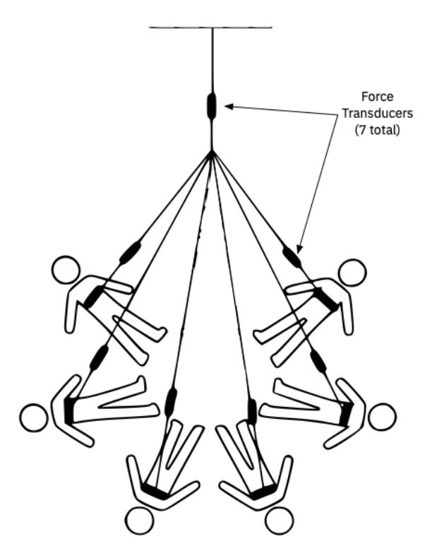
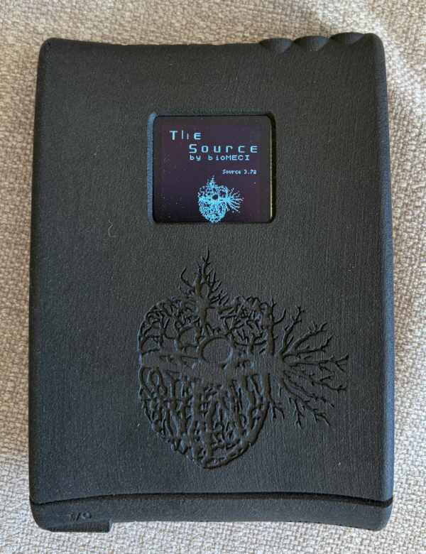
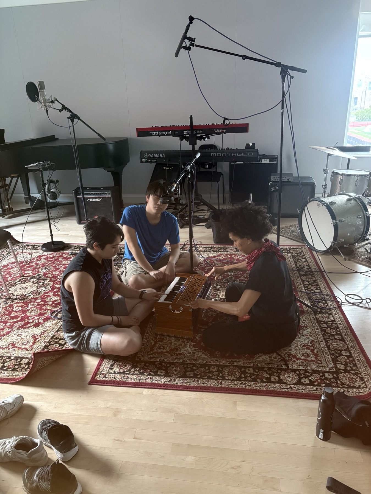
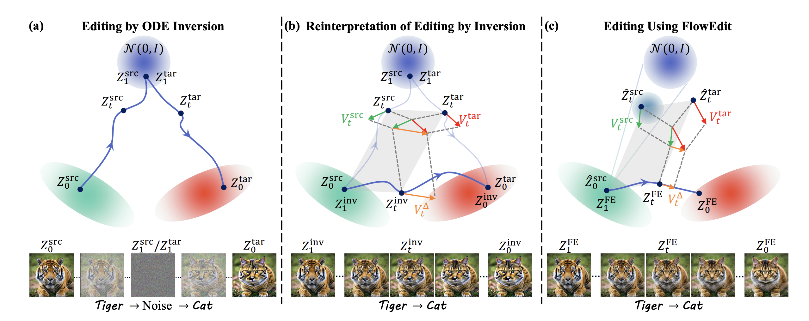
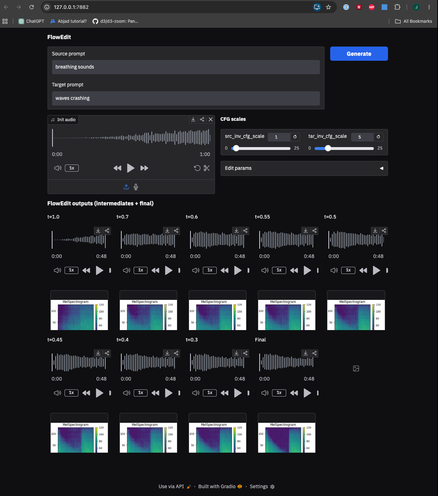

An embodied performance dissolving boundaries between body, space, and system.
The piece
Specialized biometric sensing instruments stream measurements of bodily motion in real time, linking formal traces of dancers' actions to the parameters of live generative audio systems diffused via a quadraphonic speaker array. This generated music, in turn, cues and influences the timing and affect of the danced performance, forming a "supra-organic" feedback loop.
Created by Grisha Coleman. Two workshops and two performances at MIT Future Fest, Little Kresge, October 2026.

Seven force transducers, sited where the performers' tethers meet a shared overhead anchor — the group mechanically coupled before any of it becomes sound. Figure from Coleman, Hosale & Macy, Supra-Organism: Biophysical Sensing Toward Affective Somatic Integration, MOCO '26, ACM.
Supra-Organism ran as a workshop at MOCO'26 — the 10th International Conference on Movement and Computing, Cité des Arts, Montpellier, 23–25 April — presented by Grisha Coleman with Mark-David Hosale and Alan Macy.
Participants took part in exercises joining biophysical sensing to Feldenkrais technique alongside real-time acoustic bio-feedback.

A wearable sensing platform developed by Mark-David Hosale and Alan Macy. Full-spectrum biophysical capture: ECG, EMG, EEG, EOG, EGG, respiratory effort, EDA, PPG, blood volume and flow.
It streams the captured signals out live via OSC, allowing for integration with live audio generation systems.
Supra-Organism: Biophysical Sensing Toward Affective Somatic Integration — Coleman, Hosale & Macy, MOCO '26, ACM. Platform and device photo: bioMECI — © Hosale & Macy.
The design problem
Putting live singing into the choreography was deemed too difficult, because it required putting lavalier mics on performers who are already tethered to the force transducers and wired into the biosensing rig, composing material for them to vocalize, and coordinating extra rehearsals.
A classic dilemma of computer music performance: how do you let the audience in on what is actually happening in the computer to produce the sounds they are hearing?
Or — how do you convince them you aren't just pressing play on a pre-produced recording?
The performers make much of the corpora in front of the audience, before anything is processed.
That is what maintains some semblance of the aura1 of liveness through the variety of AI procedures and compositional itineraries the audio is then processed through.
1 Walter Benjamin, The Work of Art in the Age of Mechanical Reproduction (1935) — the aura as the here-and-now of a work, the thing that withers under reproduction.
Methods of sonic/bodily transformation/activation
Stable Audio FlowEdit — an implementation of the FlowEdit1 image-editing technique for Stable Audio 32, by HAI-Res PhD student Nithya Shikarpur. Allows for creating a sequence of steps between source audio and generated audio matching a target text prompt. Playing back audio while panning across a synchronized bank of such steps composes a perceptual morph between sounds.
The Concatenator3 — a real-time system for concatenative synthesis. Given a corpus of audio recordings, it synthesizes a target recording or live audio stream by playing back and overlaying the most similar-sounding chunks in the corpus, enabling an uncanny amalgamation of the source and target audio.
1 Kulikov et al., FlowEdit: Inversion-Free Text-Based Editing Using Pre-Trained Flow Models, arXiv:2412.08629. 2 Stability AI, Stable Audio 3 Technical Report, arXiv:2605.17991. 3 Tralie & Cantil, The Concatenator: A Bayesian Approach to Real-Time Concatenative Musaicing, ISMIR 2024, arXiv:2411.04366 — CC BY-NC-ND.
17 July · session one
Plan: 44 configurations × 3 takes.
Why so systematic: a model trained on one person's breath needs to see the whole range of that breath — dynamics, speed, and how much air is in the tone — or it collapses to whatever was most common in the take.
We came in with the plan above, but the audio Grisha decided to make and that we ended up collecting veered from it significantly. That reduced the usability of the session for model training: the systematic coverage the grid was designed to guarantee is not all there.
We also had some technical difficulties, so there is some electrical noise on these recordings.
23 July · session two
Anna, Grisha, Raymond, Sora, Josh, Jon. 11 takes, ~86 minutes, recorded with per-performer stems as well as stereo mixes.
The stems are the consequential part. Because every performer was captured separately, the same session supports both mixed and stem-separated training data, and use as source material for the performance.
23 July, the big group day. Anna has photos from this one.
This session became the voice-v2 training set (56 solo takes, five performers, sung takes de-bled) and the primary Concatenator corpus.
30 July · session three
Jon, Joel and Raymond; Grisha and Sora joined later. 346 files down to 24 curated clips.
Since the initial conceptions of the piece had to do with breathing, Grisha thought a good analogue in the musical world for the breath might be the harmonium. We acquired a travel harmonium and used it to make recordings for our training datasets.

Method · interlude one
Give it a recording and two prompts — what it is, and what it should become.
FlowEdit: Inversion-Free Text-Based Editing Using Pre-Trained Flow Models — Kulikov, Kleiner, Huberman-Spiegelglas & Michaeli, 2024. arXiv:2412.08629 · Running over Stable Audio 3 (`medium`), Stability AI.
Method · interlude one, continued

Push the image all the way up to noise, then generate back down under the new prompt, losing much of the original structure.
That same edit, re-read as accumulating the difference between the target and source velocities — the orange arrow — rather than as two separate journeys.
Skip the trip to noise entirely. Start from the original and integrate only that difference. It never leaves the neighbourhood of what you gave it.
tiger → cat : breath → harmonium In their figure the pose, the framing and the background all survive the edit. In ours it is the phrasing, the timing, and where each swell lands. Figure 1 from Kulikov et al., arXiv:2412.08629.
Method · the specifics
Stable Audio 3 is a flow-matching model: the transformer predicts a velocity, not a denoised sample. Generation solves an ordinary differential equation (ODE) over noise level t:
dZt / dt = V(Zt, t, C)
from t=1 (noise) down to t=0 (audio). Because the source and target velocities are evaluated on latents carrying the same noise draw, they contain roughly the same noise component — and it cancels in the difference:
VΔ = V(Ẑtart, ctar) − V(Ẑsrct, csrc)
What is left is a pure "drive the source toward the target" direction. Integrate it starting from the actual source latent and nothing is ever pushed to noise, so every intermediate point decodes to listenable audio.
tTwo velocity evaluations per step is also exactly the seam the LoRA binding lives in — one adapter set per evaluation. Three slides on.
And the autoencoder is a hard ceiling: FlowEdit happens entirely inside that latent space, so no adapter can recover what the encoder threw away. That fact decides an argument later.
Where this started
Nithya Shikarpur built the FlowEdit server this whole strand descends from — a Gradio front end over Stability AI's Stable Audio 3. My repo began as a fork of it.

Two prompts and one uploaded recording, and the whole trajectory comes back decoded: a grid of intermediate steps plus the final, each with its own player and mel spectrogram.
Before and after training
Feed in a breath, ask for something else, and let the whole trajectory play. Stock Stable Audio 3 is where this started, and the ceiling you hit quickly.
The mechanism works, stock. The breath's phrasing survives intact either way. Every swell lands where Anna put it.
But the stock timbre is generic. Prompted for harmonium you get a plausible harmonium-shaped sound; you do not get our harmonium, and on the voice side you do not get a specific body's breath.
Broad targets fare better than close ones. Nobody has a reference for an aeolian harp, so the stock version is halfway convincing. A harmonium recorded in the same room as a real one is not.
Prompt engineering could not close that gap. Training could, and the second clip in each pair is what that bought.
August · training on ourselves
A LoRA is a small trainable delta on a frozen model — you learn a low-rank correction instead of retraining. DoRA splits that correction into magnitude and direction, which holds up better at low rank.
56 solo takes, five performers, 23 July. The source-side prior — what a person breathing sounds like here.
24 clips, 30 July. The target side of nearly every morph we run.
7 and 13 segments, from Michael Krzyzaniak's recordings — with thanks. Grisha's other two timbral targets.
LoRA — Hu et al., 2021, arXiv:2106.09685. DoRA: Weight-Decomposed Low-Rank Adaptation — Liu et al., 2024, arXiv:2402.09353. Aeolian and ebow source material courtesy of Michael Krzyzaniak.
The finding
A morph makes two velocity estimates per step. Which adapter should be awake for which estimate?
With both adapters awake, the voice model contaminates the target estimate — the harmonium never fully arrives and the result is muddy.
The soft blend is worse than either commitment: it dilutes both estimates rather than choosing.
Binding each adapter to the pass it belongs to — voice only while estimating the source velocity, harmonium only for the target — is what makes a two-LoRA server usable at all.
This verdict has a second consequence, three slides on: if only 1 and 0 matter, per-pass binding is not a dial — it is a model swap, and model swaps can be baked ahead of time.
The recipe, and the traps
Pitch is promptable. Name a note in the target prompt and the render holds it — five times out of five in the evaluation, with CFG 9 the measured optimum for staying in the right octave.
I kept hearing breath at the end of finished morphs — renders that were fully harmonium for a minute and then, quietly, were not.
Measuring it afterwards: correlation between the render and the original source sits near 0.1 for most of the file — and jumps to 0.64 over the last five seconds. The edit evaporates across roughly the final 10% of the render window.
Fix: render at least 125% of what you intend to keep, then crop back.
No metric was contradicting my ears here — nobody was measuring the end of the file at all. The ear found it; the measurement localized it and produced the fix.
The interface
Record or load → set the trim → write the two prompts → GENERATE → then move through the trajectory by hand. The render returns nine intermediate points along the path, all sharing one timeline.
Breath → harmonium, 24 seconds, one seed. Step across it and the same phrasing stays put while the timbre travels.
The SuperCollider morph GUI demo you recorded — point me at the file and I'll wire it in here.
Playhead at 2 Hz, counters at 1 Hz, no animated meters, numeric trim fields instead of drag handles. Stepped controls throughout — the same reason this deck has no transitions.
Method · interlude two
Grisha had a track she liked and wanted it in the piece. Instead of playing it, we rebuilt it out of our own breath.
Concatenative musaicing: given a corpus of audio and a target recording, play grains of the corpus so that, moment by moment, they add up to the target. What comes out has the target's pitch and rhythm and the corpus's timbre.
Point it at a song and a pile of our voices, and the song arrives sung entirely in breath — recognisably the track, recognisably us.
It is the same premise as FlowEdit from the opposite direction: not breath becoming an instrument, but a piece of music being reassembled out of breath.
Real-time by design — it was built to run live, which suits a live piece.
It keeps corpus timbre. Like Driedger's Let It Bee, but online rather than offline.
It is legible. Anyone can hear what it is doing in about four seconds — which makes it a far better demo than a morph.
The Concatenator: A Bayesian Approach to Real-Time Concatenative Musaicing — Christopher J. Tralie & Ben Cantil, ISMIR 2024. arXiv:2411.04366 · supplementary audio · Licensed CC BY-NC-ND — attribution required, no redistribution of modified versions. Antecedent: Driedger, Prätzlich & Müller, "Let It Bee", ISMIR 2015.
Method · interlude two, continued
The hard part is choosing, 43 times a second, which fragments of an 86-minute corpus to play together.
Method · the specifics
Hidden state. A p-sparse vector of corpus window indices — which p windows are active right now. p is the polyphony. Their mixing weights are not hidden: they are refit every frame by L=10 multiplicative KL-NMF updates on just those p columns.
Transition. A factorial HMM — each component independently advances one corpus frame with probability p_d, or jumps to a uniformly random window. With p_d ∈ [0.9, 0.99] continuing beats jumping, and grain lengths fall out geometric with mean sr / (hop·(1−p_d)). That is Driedger's diagonal enhancement expressed as a prior instead of a post-hoc filter.
Observation. A softmax over the negative KL fit of each particle's mixture to the incoming frame, at temperature τ. Raising τ weights the observation over the prior — tighter chase, shorter grains. The two knobs pull against each other, and that tension is the instrument.
P particles, each weighted by its observation likelihood. Degeneracy is watched with the effective sample size n_eff = 1/Σw²; below 0.1P it resamples by stochastic universal sampling.
Synthesis averages over the top 10% of particles, skips windows reused within the last few steps, then mixes the corpus waveforms — not spectra — with Hann overlap-add. No vocoder, no resynthesis: the grains are the recordings, which is precisely why the timbre stays ours.
Driedger's NMF is O(L·M·N·T), linear in corpus length. This is O(L·P·M·p·T) — no N term at all.
Three-part harmony defeats it. Notes drop out at random and always will — the filter rotates through corpus positions stochastically. Low bass fails on resolution: a 2048 window is 21.5 Hz, so C1 is unreachable. The authors' answer to the dropouts is aesthetic; believe them, but know it is a limit.
Our budget: hop 1024 at 44.1 kHz = 23.2 ms per frame. Measured cost ≈ 1.61 + 0.00197·(P·p) ms, so at P=300 the real-time ceiling is about p=36.
21–23 August
Bill Converse, "Phantom Pain" — 5 minutes 20, reconstructed entirely from the 23 July voice corpus. Also: ocean waves as a target.
These are crazy awesome!
— Anna, twenty minutes after the demos went out, 23 August
The four-voice renders run one independent filter per performer — Anna, Grisha, Raymond and Sora each rebuilding the same target from their own stems, panned across the field. Only possible because 23 July was tracked with per-performer stems.
Corpus: 96 minutes, our sessions only. Nothing scraped goes anywhere near the stage.
Turning the knobs into form
Start with ten-second chunks of somebody's breath, end with grains a fifteenth of a second long — the piece resolving from recognisable human sounds into a texture that becomes the song.
The filter itself cannot do this, and it is worth knowing why: p_d governs the hidden particle states, not the window that actually gets played. The output choice runs through a diagonal-promotion heuristic with a fixed ten-frame (232 ms) look-back, so segments cap near 0.6 s however you set the stickiness.
So the long grabs are synthesised directly instead — 631 holds, 10.0 s down to 0.07 s, a 143× range against the filter's 8×.
Offline only: 4.3× slower than real time. Pre-render, not a stage control.
p, as a rampThe same p from the state vector — how many corpus windows sound at once — ramped 1 → 2 → 5 → 10 → 20 → 50 across five minutes, as six fixed-p renders crossfaded together.
Rhythmic lock to the target saturates around ten — one and two are effectively unlocked, and past twenty nothing further is gained. What keeps changing is density and width: higher counts fill the silences and widen the stereo image rather than getting louder.
So it reads as a texture control, not a fidelity control. Cost is linear in P·p, which puts p=50 outside real time — that one is a pre-render.
A third idea, unplaced
Segment a recording at its breath and silence boundaries, rearrange whole segments in the autoencoder's latent space, decode. Same material, new form.
The SuperCollider interface: load, segment, choose an ordering, generate.
FlowEdit changes what a sound is. This changes when it happens. There is no diffusion in the core path — segments are rearranged and decoded — so the timbre comes through completely intact. An optional light pass can heal the seams.
Which makes it the natural tool for the parts of the piece where the material should stay unmistakably a person's voice, and only the form should be strange.
I don't yet know what to do with this in the piece. It will go in somewhere; the question is whether it operates on the live capture during the performance or produces fixed material beforehand.
The unglamorous half
None of this is interesting, and all of it stands between a render and a performance.
Since per-pass binding is binary, it is not a dial but a model swap — so the adapters can be merged into two copies of the network ahead of time and swapped per pass.
Bit-exact against the live-binding server — zero differing samples — and 1.23× faster at production length.
A smaller model would have been much faster. Its autoencoder is a hard ceiling that no amount of training recovers, and the gap is widest on exactly our material — sung voice, harmonium, ebow.
Tested, listened to, dropped. "The small model really sounds pretty bad."
Runs comfortably inside its real-time budget on the Mac, CPU only, with headroom to spare. The knobs are safe to move mid-stream.
Memory, not speed, is what limits corpus length — around 7 GB per hour of stereo.
Where this actually stands: the Concatenator is performable now. FlowEdit is not — a lane still takes tens of seconds, which makes it a near-real-time instrument at best. Closing that gap, or designing around it, is the open problem between now and October.
Where it all lands · work in progress
Built 27 August for the studio session on the 28th. Everything above, reachable from a single SuperCollider window.
1. Arm four lanes, generate, then sweep one morph slider 0 → 10 so the timbre travels while you watch it.
2. A take running through the Concatenator while you move wet and chase speed.
3. Hands on the nanoKONTROL2 during either — a cutaway that makes it read as an instrument rather than a GUI.
Eight weeks out
Credits.
Supra-Organism is choreographed by Grisha Coleman, with Anna Huang; coordination by Amira Samiy; production by MIT Future Fest.
Voices: Anna Huang, Grisha Coleman, Raymond, Sora, Josh, Jon Myers. Harmonium: Jon Myers, Joel, Raymond, Grisha Coleman, Sora.
The FlowEdit server this work forks from was built by Nithya Shikarpur.
Aeolian harp and ebow recordings courtesy of Michael Krzyzaniak.
FlowEdit — Kulikov et al., arXiv:2412.08629 ·
Stable Audio 3 — Stability AI ·
LoRA — Hu et al., arXiv:2106.09685 ·
DoRA — Liu et al., arXiv:2402.09353 ·
The Concatenator — Tralie & Cantil, ISMIR 2024, arXiv:2411.04366, used under CC BY-NC-ND ·
Let It Bee — Driedger et al., ISMIR 2015.